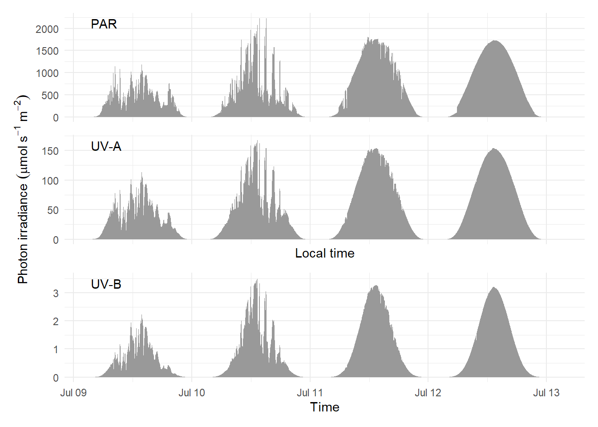

4 The UV, VIS and NIR environment above vegetation
Quantity, quality and timing in nature
![]()
Abstract
This chapter discusses the light environment of terrestrial plants.
First edition authors
Andreas Albert, Lars Olof Björn, Lasse Ylianttila
$$
% fluence rate
$$
4.1 Solar radiation at ground level
4.1.1 Position of the sun
When studying plants we frequently need to describe the position of the sun because of its effect on spectral irradiance and as a determinant of day length. The azimuth angle (\(\phi\)) is usually measured clockwise from the North on a horizontal plane. The position on the vertical plane is measured either as the zenith angle (\(\theta\)) downwards from the zenith, or as an elevation angle (\(h\)) upwards from the horizon. Consequently \(h + \theta = 90^\circ = \frac{\pi}{2}\,\)radians. When describing the position of the sun as in Figure 4.1 the observer is situated at the origin of the system of coordinates used to describe the angles.
The daily path of the sun in the sky depends on the time of the year and the latitude. The time of solar noon depends on the actual geographic location, and nearly always differs from the local-time noon which is based on a time zone and possibly affected by a shift of one or more hours to enhance daylight use, especially in summer time.
Highly accurate astronomical formulas are available and can be used to compute the current, past and future positions of the sun in the sky (e.g., Meeus 1998). Less accurate, but simpler to compute, formulas also exist. These formulas can also be use to compute day- and night lengths based on different twilight definitions.
Note
The accuracy of astronomical formulas is less when the sun is near the horizon because, as seen in the previous chapter, the transition from vacuum to the atmosphere introduces a small angular displacement of the light beam depending on the refractive index and angle of incidence. The difficulty is that the refractive index (\(\nu\)) of the air depends on its water content, which is not constant.
The path of the sun in the sky determines the lengths of the day and night. The most frequently used criterion for the day to night and night to days transitions is that the upper rim of the solar disk coincides with the astronomical horizon. As the solar disk is approximately 2 degrees in diameter, the transition between day and night is in this case when the centre of the solar disk is one degree below the horizon. Alternatively, the centre of the solar disk can be used coinciding with the astronomical horizon can be used as the criterion.

{kind=link}
Twilight is the period before sunrise and after sunset when there is more intense diffuse light than further into the night (Figure 4.2). The definitions of twilight are based on practical considerations of human activities, and called civil, naval and astronomical (Figure 4.3). During civil twilight artificial lighting is usually not needed in cities. For nautical twilight I have seen two descriptions: 1) before nautical dawn and after nautical dawn it is possible to navigate based on the stars, and 2) after nautical dawn and before nautical dusk navigation by sight is possible. Before astronomical dawn and after astronomical dusk stars of sixth magnitude are visible. These three descriptions are very approximate, as they do not consider the effect of clouds, light pollution from artificial sources, or other source of light.

The day length through the year computed for three cities, one of them, Ivalo at the northern latitude within the Artic circle.
If we include twilight, the estimated length of the photoperiod increases (Figure 4.5).
Tip
Even though day length or photoperiod duration is normally based on the astronomical horizon, in many cases there are obstacles that occlude the sun from view until later at dawn or earlier at dusk: mountains, vegetation, buildings, etc. Thus, in some cases it may be more relevant for a scientific study with plants to consider sun elevation angles \(h > 0\) as the criterion; even different angles can be used for day start and day end.
The question remains of what light level is actually detected by plants and other organisms as the night-day and day-night transitions. Most likely the exact value depends on the genotype and the realized phenotype. However, at dawn and dusk irradiance increases and decreases, respectively, qquite fast at low and medium latitudes. At high latitudes, at some times the year twilight lasts for a long time making the change in irradiance more gradual. At civil dawn/dusk irradiance is already very low.
The dependency of the elevation angle on time of the year and latitude is illustrated in Figure 4.6.
Three images from fig 3.6 in Graedel and Crutzen, 1993. Scanned. Have to be redrawn.

Add links to previous chapter
4.1.2 Solar radiation at the top of the atmosphere
We can measure irradiance outside the atmosphere at a know distance from the sun and we can also measure the apparent diameter of the sun at this same distance. Based on this we can calculate the total radiant energy emitted by the sun and irradiance at arbitrary distances.
In outer space, in vacuum, no scattering takes place as the light travels, and because of this, the sky looks completely black. Planets and the Moon do reflect light allowing us to see them. As the distance to the sun increases irradiance decreases as the flux spreads into a large area represented by the surface of a sphere, without scattering, this becomes a geometric computations in 3D.
Geometric calculation
The spectral irradiance of the sun \({E_{\mathrm{s}}}(\lambda)\) can be estimated assuming a homogeneous flux and using the correlation of intensity and radiance from their definitions in table [tab:Phys:Quants]. The intensity of the sun \({I_{\mathrm{s}}}(\lambda)\) is given by the radiance \({L_{\mathrm{s}}}(\lambda)\) multiplied by the apparent sun surface (a non-tilted disk of radius \(r_s=7\times 10^5\) km). To calculate the decreased solar irradiance at the top of the Earth’s atmosphere, the distance of the sun to the Earth (\(r_0=150\times 10^6\) km) has to be taken into account applying the inverse square law of irradiance of equation ([equ_r2law]). Thus, the extraterrestrial solar irradiance is
\[{E_{\mathrm{s}}}(\lambda)={L_{\mathrm{s}}}(\lambda)\cdot\frac{\pi r_s^2}{r_0^2}\] Remembering the solid angle of equation ([equ_solidangle]), the right multiplication factor represents the solid angle of the sun’s disk as seen from the Earth’s surface (\(\approx 6.8\times 10^{-5}\) sr).
At the time scales relevant to plants and humans, the distance between the Sun and the Earth varies little, as well as the emission from the surface of the sun. Thus, we can use a “solar constant” as a useful and nearly perfect approximation. The solar “constant”, the irradiance at the top of the atmosphere, varies between \(1\,361\) and \(1\,362~\mathrm{W m^{-2}}\) due to changes in solar activity. In addition to the irradiance, the shape of the solar spectrum at the top of the atmosphere varies very little in time, and is usually assumed constant.
Note
Radiation from the sun reaches the Earth’s surface in about eight minutes (\(t\) = time, \(r_0\) = distance sun to earth, \(c\) = velocity of light in vacuum): \[t = \frac{r_0}{c} \approx \frac{150 \times 10^9 ~{\rm m}}{3 \times 10^8 ~\frac{\rm m}{\rm s}} = 500 ~{\rm s} = 8.3 ~{\rm min}\].
The energy radiance (\(L\)) of radiation emitted by the sun is similar in shape, but not identical, to the emission spectrum of a black body. The solar spectrum has a fine structure of peaks and valleys arising from the atoms and molecules in the sun while black body emission is described by a smooth curve. A “match” based on the wavelength at which spectral energy radiance is at its maximum can be used as criterion to estimate the temperature of the sun’s surface. Obviously, we use the extraterrestrial spectrum for this match. We see in the AM0 curve in Figure 4.11 that the wavelength at the maximum is near 500 nm. In reality the temperature of the sun surface is not uniform, and different sources mention as its average temperatures between 5800 K and 5500 K. Comparing the AM0 curve in Figure 4.11 to the 5800 K curve in Figure 4.7 the similary of their shapes is clear.

Planck’s law describes black body emission at temperature \(T\) (Figure 4.7), expressed as absolute temperature measured in degrees Kelvin (K):
\[L_s(\lambda,T) = \frac{2hc^2}{\lambda^5}\cdot\frac{1}{\mathrm{e}^{(hc/k_\mathrm{B}T\lambda)}-1}\]
with Boltzmann’s constant \(k_\mathrm{B}=1.381\times 10^{-23}\) .
The “equivalent temperature” of a black body is given by Wien’s displacement law (Figure 4.8), which gives the wavelength at which the radiative energy emitted by a black body is at its maximum as a function of its absolute temperature.
\[\lambda_\mathrm{max} \cdot T = 2.898 \times 10^6 \,{\rm nm\,K}\]
Caution
The concept of “colour temperature” used for describing the emission of lamps used for illumination and more generaly in photography differs in that it takes into account human colour vision when determining the match between the black body emission spectrum and the spectrum of an arbitrary light source. The coordinated colour temperature (CCT) for the AM1.5 solar spectrum is 5231 K and for the AM0 spectrum is 5922 K.
The spectral irradiance of the sun \({E_{\mathrm{s}}}(\lambda)\) can be estimated assuming a homogeneous flux and using the correlation of intensity and radiance from their definitions in table [tab:Phys:Quants]. The intensity of the sun \({I_{\mathrm{s}}}(\lambda)\) is given by the radiance \({L_{\mathrm{s}}}(\lambda)\) multiplied by the apparent sun surface (a non-tilted disk of radius \(r_s=7\times 10^5\) km). To calculate the decreased solar irradiance at the moment of reaching the Earth’s atmosphere, the distance of the sun to the Earth (\(r_0=150\times 10^6\) km) has to be taken into account due to the inverse square law of irradiance of equation ([equ_r2law]). Thus, the extraterrestrial solar irradiance is
\[{E_{\mathrm{s}}}(\lambda)={L_{\mathrm{s}}}(\lambda)\cdot\frac{\pi r_s^2}{r_0^2}\label{equ_extraterrestrial}\] Remembering the solid angle of equation ([equ_solidangle]), the right multiplication factor represents the solid angle of the sun’s disk as seen from the Earth’s surface (\(\approx 6.8\times 10^{-5}\) sr). Figure [fig_sun] shows the spectrum of the measured extraterrestrial solar radiation (Wehrli, 1985)1 and the spectrum calculated by equation 1.14 using Planck’s law of equation 1.12 at a black body temperature of 5800 K. Integrated over all wavelengths, \({E_{\mathrm{s}}}\) is about 1361 to 1362 at top of the atmosphere (Kopp and Lean 2011). This value is called the ‘solar constant’. In former times, depending on different measurements, \({E_{\mathrm{s}}}\) varies by a few percent (Iqbal 1983). For example, the irradiance at the top of the atmosphere (the integrated value) changes by \(\pm 50\) (3.7 %) during the year due to distance variation caused by orbit excentricity (Mobley 1994). More accurate measurements during the last 25 years by spaceborne radiometers show a variability of the solar radiation of a few tenth of a percent. A detailed analysis is given by Fröhlich and Lean (2004). \({E_{\mathrm{s}}}\) can also be calculated by the Stefan-Boltzmann Law: the total energy emitted from the surface of a black body is proportional to the fourth power of its temperature. For an isotropically emitting source (Lambertian emitter), this means \[{L_{\mathrm{}}}= \frac{\sigma}{\pi} \cdot T^4 \label{equ_boltzmann}\] with the Stefan-Boltzmann constant \(\sigma=5.6705\times 10^{-8}\) W m\(^{-2}\) K\(^{-4}\). With \(T = 5800\) K equation [equ_boltzmann] gives the radiance of the solar disc. From this value, we can obtain an approximation of the solar constant, by taking into account the distance from the Earth to the Sun and the apparent size of the solar disc (see equations [equ_solidangle] and [equ_r2law]).

The total solar irradiance covers a wide range of wavelengths. Using some of the ‘colours’ introduced in table [tab:Waverange], table [tab_sun] lists the irradiance and fraction of \({E_{\mathrm{s}}}\) of different wavelength intervals.
| Waveband | Wavelength \(\lambda\) (nm) | Irradiance \({E_{\mathrm{}}}\) (\(W m^{-2}\)) | Irradiance \({E_{\mathrm{}}}\) (%) |
|---|---|---|---|
| UV-C | 100 – 280 | 7 | 0.5 |
| UV-B | 280 – 315 | 17 | 1.3 |
| UV-A2 | 315 – 340 | 21 | 1.6 |
| UV-A1 | 340 – 400 | 63 | 4.7 |
| PhR | 400 – 700 | 531 | 39.6 |
| IR-A (CIE) | 700 – 1400 | 517 | 38.6 |
| IR-B (CIE) | 1400 – 3000 | 184 | 13.7 |
| TOTAL | 1339 | 100.0 |
4.1.3 Solar radiation at ground level
Above, we used the word light with its everyday meaning. Its technical definition is of radiation visible to humans. Ultraviolet, visible and infrared radiation (taken together are called in meteorolgy shortwave radiation) are components of solar radiation.
4.1.3.1 Spectrum under clear sky
We could include a plot of scalar spectral irradiance (easy to generate with TUV) or of hemispherical spectral irradiance measured with a hemispherical diffuser (I have data). A comparison to spectral irradiance on a horizontal plane could be very informative.
Before reaching the Earth’s surface radiation from the sun travels through the atmosphere. The sun elevation angle affects the length of the path that the light arriving from the sun travels through the atmosphere. In atmospheric physics it is common to describe spectra as corresponding to AM0 for above the atmosphere, AM1 when the sun is at the zenith, i.e., one atmosphere thickness and AM1.5 when the length of the air mass traversed is 1.5 times that when the sun is at the zenith.
The air mass traversed is, in reality, not exactly proportional to the distance computed by trigonometry, but not far from it. An empirical formula (Kasten and Young 1989) can be used as a better approximation to the computation of AM values from the elevation angle (\(h\)) (Figure 4.10).
Light when travelling through the atmosphere interacts with the gases and particles composing it. The light is attenuated and scattered. Different wavelengths are differently affected by these processes, giving us a blue sky and warmer coloured direct sunlight. In other words, the daylight spectrum depends on the position of the sun in the sky, and on the composition of the atmosphere along this path (Figure 4.11 and Figure 4.12). In addition to molecular absorption and scattering, aerosols, both liquid like water and solid like ice and dust, interact with light.


The extraterrestrial solar spectrum differs from that at ground level due to the absorption of radiation by the atmosphere, because the absorption peaks of water, and other components of the atmosphere, cause corresponding valleys to appear in the solar spectrum at ground level. The solar spectrum has a much finer structure, due to emission and absorption lines of elements, this fine structure is not observable with the spectroradiometers normally used in plant research. For plant research, finr structure of peaks and valleys is considered irrelevant because plant pigments in vivo have broader peaks and valleys in their spectra.
Not only total irradiance, but also the wavelength distribution and the diffuse fraction of the solar spectrum changes with the seasons of the year and time of day. This changes are in large part explained by the change in sun elevation. In what follows we describe these changes as a function of sun elevation. The increasing air mass traversed with decreasing sun elevation affects the shape of the spectrum, by stronger attenuation of the shorter wavelengths. An increased air mass also increases scattering in the atmosphere.
A figure of spectral irradiance is difficult to read as both the shape of the curve and the maximum spectral irradiance change in parallel Figure 4.13.

If we rescale the curves to equal PAR irradiance the change in shape is easier to observe Figure 4.14.
Plotting the normalised photon irradiance for different wavebands Figure 4.16 shows that the daily course of UV-B photon irradiance is different than that for other bands, even the adjacent UV-A2. UV-B irradiance decreases faster with decreasing sun elevation (\(h\)).
4.1.3.2 Diffuse fraction under clear sky
At the Earth’s surface, the incident radiation or global radiation has two distinct components, direct radiation and diffuse radiation. Direct radiation is radiation travelling directly from the sun, while diffuse radiation is that scattered by the atmosphere. Diffuse radiation is what gives the blue colour to the sky and white colour to clouds. The relative contribution of direct and diffuse radiation to global radiation varies with wavelength and weather conditions. The contribution of diffuse radiation is more in the UV region, and in the presence of clouds (Figures [fig:sky:photos] and [fig:diffuse:UV]).

Simultaneous spectral measurements of direct and diffuse solar radiation are infrequent. Radiation transfer models such as TUV estimate these components, as shown in Figure 4.17. The diffuse fraction is larger at shorter wavelengths. Under overcast conditions or any other situation when the solar disk is fully occluded the diffuse fraction is equal to one. However, only in outer space the diffuse fraction approaches zero.

In Figure 4.17 the spectrum at a single sun elevation is shown. In Figure 4.18 the diffuse fraction from simulations under the same atmospheric conditions are shown as a function of sun elevation. The diffuse fraction is largest for shorter wavelengths and for each waveband it increases as the sun elevation decreases. This change is not linear, and has a similar shape as the change in air mass traversed Figure 4.10.

4.1.3.3 Ozone column
The spectral wavelength distribution is also modified by the amount of ozone in the atmosphere, known as the ozone column and measured in Dobson units (DU = mm of pure ozone) Figure 4.20. As expected, it is also affected by the air mass traversed, which depends on sun elevation. The UV-B:PAR photon ratior is more strongly dependent on the thickness of the ozone column at low sun elevations, when the ratio it smallest Figure 4.20.
Climate change and ozone depletion
An increase in the UV-B and UV-A2 irradiance is caused by depletion of the ozone layer in the stratosphere, mainly as a consequence of the release of chlorofluorocarbons (CFCs), used in cooling devices such as refrigerators and air conditioners, and in some spray cans (see Graedel and Crutzen 1993). The most dramatic manifestation of this has been the seasonal formation of an “ozone hole” over Antarctica. It is controversial whether a true ozone hole has already formed in the Arctic, but strong depletion has occurred in year 2011 (Manney et al. 2011) and atmospheric conditions needed for the formation of a “deep” ozone hole are not very different from those prevalent in recent years. Not so dramatic, but consistent, depletion has also been observed at mid-latitudes in both hemispheres. CFCs and some other halocarbons have been phased out following the Montreal agreement and later updates. However, as CFCs have a long half life in the atmosphere, of the order of 100 years, their effect on the ozone layer will persist for many years, even after their use has been drastically reduced. Model-based predictions of changes in atmospheric circulation due to global climate change have been used to derive future trends in index and ozone column thickness (Hegglin and Shepherd 2009). In addition, increased cloudiness and pollution, could lead to decreased global irradiance, sometimes called ‘global dimming’ (e.g. Stanhill and Cohen 2001).
4.1.3.4 Clouds
Above we have ignored the effects of clouds and relied heavily on simulations for clear-sky conditions. Next we will consider the effect of clouds and use as examples measurements and simulations that include the effect of clouds. We will consider variation at different time scales. We start with a time series of hourly mean spectra for one day, scaled to equal PAR photon irradiance to illustrate how the shape of the spectrum can change during the course of day Figure 4.21.

It should be noted that, through reflection, broken clouds can locally increase irradiance to values above those under clear-sky conditions (Frederick et al. 1993; Díaz et al. 1996). These are transient increases of short duration and easily detected with fast measurements, and the irradiance increase can be 30% or more compared to under a clear sky. This is well illustrated by measurements at 1 min interval during four consecutive days Figure 4.22.

The photon ratios for the same four days Figure 4.23 shows the influence of clouds and of sun elevation, both affecting the PAR diffuse fraction. In particular, broken clouds on 10 July cause momentary nearly doubling of the UV-A:PAR and UV-B:PAR photon ratios. The short-term effect on the R:FR is smaller, but the differences between days larger, possibly because of its dependence on the atmospheric water content (kotilainenxxxx?).
In Figure 4.23 we can see fast changes in the ratios towards the end of the day. The time-series of spectra measured once a minute during 5 minutes shows how the shape of the spectrum can rapidly change leading to rapid changes in the R:FR photon ratio Figure 4.24.
The low irradiance periods interspersed with higher irradiance ones, caused by moving clouds intermittently occluding the sun, or cloud flecks, have a haphazard dynamics that is very dependent on the cloud type and wind conditions. One way of describing them is by estimating an empirical probability density function for their duration Figure 4.25. The distribution is not Normal, and skewed to the right. Semi-transparent and small clouds attenuate irradiance less that large thick clouds and at the same time create cloud flecks of shorter duration Figure 4.25.
Irradiance is much lower under cloud cover than in full sunlight under a clear sky Figure 4.26. The cloud light spectrum is shifted towards shorter wavelengths, i.e., shade light is bluer (or cooler) than full sunlight, more easily seen after scaling the spectra to equal irradiance Figure 4.26. For this example the coordinated colour temperature (CCT) was 6190 K and 5580 K for the overcast and clear sky, respectively.
4.1.3.5 Elevation
We have three options: 1) generate suitable data with TUV, 2) show measured data from the literature, or 3) both.
A simulation with the TUV model shows how attenuation by the atmosphere decreases with increasing ground altitude under a clear sky, with all other parameters kept unchanged, including surface albedo. As above, we show the actual spectral irradiance and the spectral irradiances scaled to equal PAR photon irradiance. The effect is not huge and the decrease in attenuation is stronger at shorter wavelengths Figure 4.27.
In Figure 4.27 we show the spectra for two extreme altitudes, sea level and 8000 m above sea level. In Figure 4.28 we show the increase in UV-B, UV-A2, UV-A1 and PAR with ground altitude.
In reality, the different variables shown individually in the examples in this chapter, can vary in ways that their effects add up, so the total range of variation is larger than is apparent in the examples above.
4.1.3.6 Seasons and latitude
The main determinant of changes in spectral irradiance with seasons and latitude is the changing path of the sun through the sky, and consequently of the sun elevation angle. However, several other variables play a role. The depth of the ozone column varies with latitude and seasonally. Clouds and the water column depth vary locally and with latitude, as does ground elevation and albedo. The result is that spectral irradiance varies in time and space. One way of summarising this is to describe the local climatology using maps with monthly averages over several years interpolated over a geographic grid. One approach is to use data retrieved by instruments on board satellites. An alternative approach is to describe terrestrial solar radiation at locations where ground-level measurements are available. We start with examples based on this second approach and observations with broadband sensors from ELDONET. From the perspective of research with plants the availability of UV-B, UV-A and PhR data measured concurrently is important.
Considering a longer time scale of years, seasonal and daily variation are combined. The seasonal pattern of variation in UV-B daily exposure is very clear but has day to day variation superimposed Figure 4.29. The strong change in the UV-B:PAR photon ratio with sun elevation creates a strong seasonal pattern in this photon ratio Figure 4.29.
UV-B irradiance increases with elevation in mountains and with decreasing latitude Figure 4.30 and is particularly high on high mountains in equatorial regions.

I have data for 2-3 years time series measured with the same sensors as the four days plot above. Could be added as they include separate measurements of UV-B, UV-A2, UV-A1, blue, red, far-red and PAR irradiances. Maybe a figure with daily averages per month or week or showing a moving average or moving median could be informative. What do you think?
Maps for global radiation, UV-B, UV-A2 and UV-A1 could be added to this section.
Available as ASCII file at PMODWRC, ftp://ftp.pmodwrc.ch/pub/publications/pmod615.asc↩︎